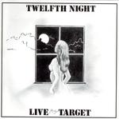

| Artist: | Twelfth Night |
| Title: | Live At The Target |
| Label: | Cyclops CYCL-140 |
| Length(s): | 73 minutes |
| Year(s) of release: | 1981/2004 |
| Month of review: | [03/2005] |
| 1) | Fur Helene | 6.56 |
| 2) | After The Eclipse | 7.43 |
| 3) | East To West | 10.55 |
| 4) | Sequences | 20.10 |
| 5) | Afghan Red | 12.16 |
| 6) | (Hats Off To) Freddie Hepburn | 8.45 |
| 7) | Encore Une Fois | 6.25 |
Before starting out in the most known line up with Geoff Mann on vocals, the band were instrumental for a while. This is the legacy of that period. It contains the original Live At The Target tracks, with three bonus tracks added to reflect what a Twelfth Night concert sounded like in the period.
After The Eclipse shows strong electronic influences, reflecting the time it was recorded: at the top of the wave movement. The keys make the melody, in ways substituting the vocals. This does make for a sound that has more diction than electronic music does. Especially the mesmerizing sound of the keys makes this clear.
The other tracks have more guitar, already with the wobbly sound present. In these guitar and keys take the lead each at their time. The first three tracks of the original album remained instrumental tracks, whilst the latter, Sequences, was adapted into a vocal track when Mann took on the mike. The instrumental differences between these two versions are not that big, although some of the livelier sections were toned down or cut out (the vocal version is some three minutes shorter). Where the previous pieces stood up as instrumental pieces, this piece does ask the question: don't we need a vocalist? The vocal rendition showed they did. Having said that, the original live album was a well rounded whole standing up in its own rights.
The bonus material starts off with Afghan Red, which takes a couple of minutes to kick into gear, before we get the characteristic exchange between keys and guitar. Still, the extraverted style of the tracks on the original album is there only in what seems a more rudimentary version.
Freddie Hepburn fits in with the early tracks better, displaying the keys and wobbly guitar, as does closer Encore Une Fois. The latter was written because the band felt they needed some original material to play as an encore, which became necessary with the rising of their popularity. Even though these bonus tracks are interesting from a historical perspective, they do show that 45 minutes of the original album were just the right amount.